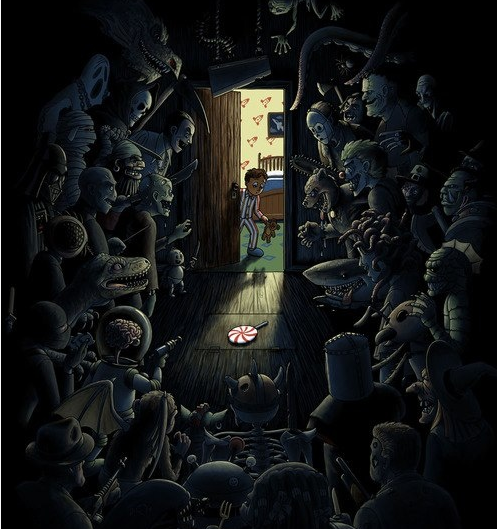
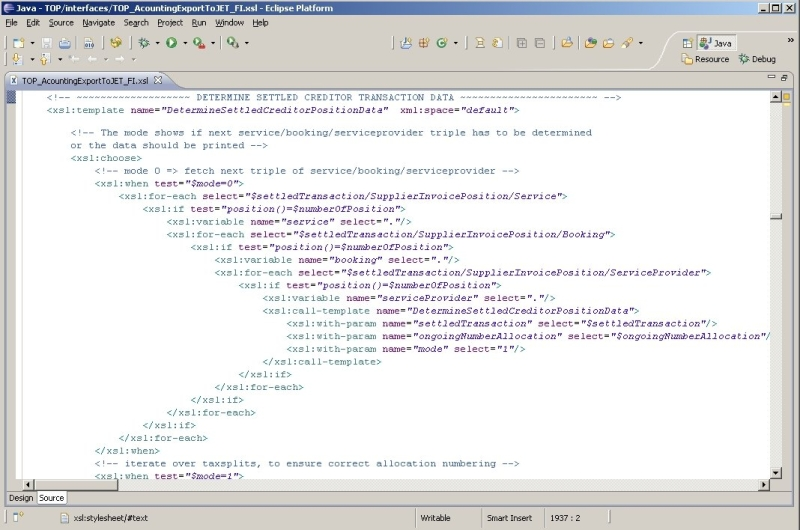
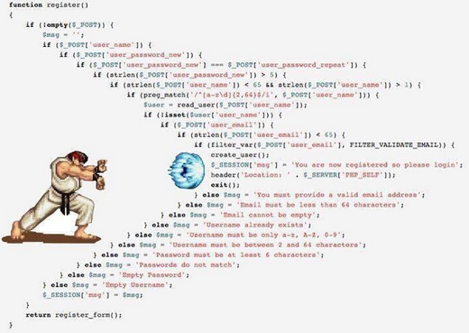

Multiple items
val ( 5 add 3 gives 8 ) : unit -> 'a
Full name: index.( 5 add 3 gives 8 )
--------------------
val ( 5 add 3 gives 8 ) : unit -> 'a
Full name: index.( 5 add 3 gives 8 )
val ( 5 add 3 gives 8 ) : unit -> 'a
Full name: index.( 5 add 3 gives 8 )
--------------------
val ( 5 add 3 gives 8 ) : unit -> 'a
Full name: index.( 5 add 3 gives 8 )
val actual : obj
val ( isPalindrome returns true for "kajak" ) : unit -> 'a
Full name: index.( isPalindrome returns true for "kajak" )
Full name: index.( isPalindrome returns true for "kajak" )
val x : int
val y : int
val ( customer is important if she has X subscriptions ) : unit -> 'a
Full name: index.( customer is important if she has X subscriptions )
Full name: index.( customer is important if she has X subscriptions )
val inputXml : string
val result : obj
val ( ignores disabled nuget feed from upstream ) : unit -> 'a
Full name: index.( ignores disabled nuget feed from upstream )
Full name: index.( ignores disabled nuget feed from upstream )
val upstream : obj
union case Option.None: Option<'T>
Multiple items
module Map
from Microsoft.FSharp.Collections
--------------------
type Map<'Key,'Value (requires comparison)> =
interface IEnumerable
interface IComparable
interface IEnumerable<KeyValuePair<'Key,'Value>>
interface ICollection<KeyValuePair<'Key,'Value>>
interface IDictionary<'Key,'Value>
new : elements:seq<'Key * 'Value> -> Map<'Key,'Value>
member Add : key:'Key * value:'Value -> Map<'Key,'Value>
member ContainsKey : key:'Key -> bool
override Equals : obj -> bool
member Remove : key:'Key -> Map<'Key,'Value>
...
Full name: Microsoft.FSharp.Collections.Map<_,_>
--------------------
new : elements:seq<'Key * 'Value> -> Map<'Key,'Value>
module Map
from Microsoft.FSharp.Collections
--------------------
type Map<'Key,'Value (requires comparison)> =
interface IEnumerable
interface IComparable
interface IEnumerable<KeyValuePair<'Key,'Value>>
interface ICollection<KeyValuePair<'Key,'Value>>
interface IDictionary<'Key,'Value>
new : elements:seq<'Key * 'Value> -> Map<'Key,'Value>
member Add : key:'Key * value:'Value -> Map<'Key,'Value>
member ContainsKey : key:'Key -> bool
override Equals : obj -> bool
member Remove : key:'Key -> Map<'Key,'Value>
...
Full name: Microsoft.FSharp.Collections.Map<_,_>
--------------------
new : elements:seq<'Key * 'Value> -> Map<'Key,'Value>
val ofList : elements:('Key * 'T) list -> Map<'Key,'T> (requires comparison)
Full name: Microsoft.FSharp.Collections.Map.ofList
Full name: Microsoft.FSharp.Collections.Map.ofList
val next : obj
val expected : obj
val overridden : obj
val ( add gives sum of two components ) : x:'a * y:'b * expected:'c -> 'd
Full name: index.( add gives sum of two components )
Full name: index.( add gives sum of two components )
val x : 'a
val y : 'b
val expected : 'c
Multiple items
val ( add gives sum of two components ) : x:int * y:int -> 'a
Full name: index.( add gives sum of two components )
--------------------
val ( add gives sum of two components ) : x:'a * y:'b * expected:'c -> 'd
Full name: index.( add gives sum of two components )
val ( add gives sum of two components ) : x:int * y:int -> 'a
Full name: index.( add gives sum of two components )
--------------------
val ( add gives sum of two components ) : x:'a * y:'b * expected:'c -> 'd
Full name: index.( add gives sum of two components )
val expected : int
val ( parsing a stringified JSON gives original result ) : original:'a -> bool
Full name: index.( parsing a stringified JSON gives original result )
Full name: index.( parsing a stringified JSON gives original result )
val original : 'a
val stringified : obj
val parsed : 'a
val ( distinct is idemptotent ) : input:'a list -> bool
Full name: index.( distinct is idemptotent )
Full name: index.( distinct is idemptotent )
val input : 'a list
type 'T list = List<'T>
Full name: Microsoft.FSharp.Collections.list<_>
Full name: Microsoft.FSharp.Collections.list<_>
val firstTurn : obj
val secondTurn : obj
val ( optimised version really works ) : input:'a -> bool
Full name: index.( optimised version really works )
Full name: index.( optimised version really works )
val input : 'a
val optimisedResult : obj
val plainResult : obj
val title : obj
Full name: index.title
Full name: index.title
val body : obj
Full name: index.body
Full name: index.body
val topic : obj
Full name: index.topic
Full name: index.topic
val schema : obj
Full name: index.schema
Full name: index.schema
val ( modifier XML conforms to schema ) : topic:'a -> 'b
Full name: index.( modifier XML conforms to schema )
Full name: index.( modifier XML conforms to schema )
val topic : 'a
val output : obj
val ( if text node under "b" element then richtext has bold ) : topic:'a -> 'b
Full name: index.( if text node under "b" element then richtext has bold )
Full name: index.( if text node under "b" element then richtext has bold )
val textNodes : seq<obj>
val richtexts : seq<obj>
module Seq
from Microsoft.FSharp.Collections
from Microsoft.FSharp.Collections
val zip : source1:seq<'T1> -> source2:seq<'T2> -> seq<'T1 * 'T2>
Full name: Microsoft.FSharp.Collections.Seq.zip
Full name: Microsoft.FSharp.Collections.Seq.zip
val filter : predicate:('T -> bool) -> source:seq<'T> -> seq<'T>
Full name: Microsoft.FSharp.Collections.Seq.filter
Full name: Microsoft.FSharp.Collections.Seq.filter
val fst : tuple:('T1 * 'T2) -> 'T1
Full name: Microsoft.FSharp.Core.Operators.fst
Full name: Microsoft.FSharp.Core.Operators.fst
val snd : tuple:('T1 * 'T2) -> 'T2
Full name: Microsoft.FSharp.Core.Operators.snd
Full name: Microsoft.FSharp.Core.Operators.snd
Property based testing with F#
Plan
- Standard approach
- Property based approach
- Working example
- How to come up with a good test
- How we use it in Phoenix
Credits: http://fsharpforfunandprofit.com/
Standard approach
or "what's wrong with unit tests?"
1. Correctness
"Unit tests have been compared with shining a flashlight into a dark room in search of a monster. Shine the light into the room and then into all the scary corners. It doesn't mean the room is monster free - just that the monster isn't standing where you've shined your flashlight."

1: 2: 3: 4: |
|
- How could add be implemented?
1: 2: 3: 4: |
|
- How certain are we that the function is correctly implemented?
- How is null handled?
- How does it work for input with even count of letters?
"Unit tests do not prove that a program runs correctly. Unit tests may at most tell that the program does not fail for specific cases."
"How many tests are enough?"
2. Arrange phase
(also known as fixture)
1: 2: 3: 4: 5: 6: 7: 8: 9: 10: 11: |
|
1: 2: 3: 4: 5: 6: 7: 8: 9: 10: 11: 12: 13: 14: 15: 16: 17: 18: 19: |
|
1: 2: 3: 4: 5: 6: 7: 8: 9: 10: 11: 12: 13: 14: 15: 16: 17: 18: 19: 20: 21: 22: 23: 24: |
|
Issues with standard approach
(unit tests)
- Correctness is not guaranteed
- Arrange phase can be overwhelming
Property based approach
Idea
- Don't test for specific cases
- Think about what properties your code should have
- Test input / fixture is indeterministic - but it's always generated for a certain type
- We manipulate the generator, and the library makes sure to provide arbitrary instances
http://fsharpforfunandprofit.com/posts/property-based-testing/
Building blocks
- Generator
- Shrinker
Generator
- Library comes with predefined generators for primitive types and most basic language structures
- The mechanism is extensible, i.e. we can create our own generators for certain cases
- Given a generator and a seed, the library generates random instances of the desired type
- A single test is repeated multiple times, each time with a slightly "bigger" input
Shrinker
- If for some input a test fails, the input is being shrunk
- If the shrunk input still causes the test to fail, it's being shrunk again
- Process is repeated until minimal faulty input is found
Property based approach
solving issues with unit tests
- Arbitrary input can detect edge cases - Correctness
- Much simpler and consistent test fixture - Arrange
Working example
(a journey to Nirvana)
Revisited add - initial version
1: 2: 3: 4: |
|
Add - parametrized tests
1: 2: 3: 4: 5: 6: 7: |
|
Add - using AutoFixture library
1: 2: 3: 4: 5: 6: |
|
- run only once?
- what about using the "+" operator?
Add - using Property Based Approach
Demo
How to come up with a good test
applicable to a more complex problem
Scott Wlaschin's list
- "Different paths, same destination"
- "There and back again"
- "Some things never change"
- "The more things change, the more they stay the same"
- "Solve a smaller problem first"
- "Hard to prove, easy to verify"
- "The test oracle"
http://fsharpforfunandprofit.com/posts/property-based-testing-2/
"There and back again"
1: 2: 3: 4: 5: |
|
"The more things change, the more they stay the same"
1: 2: 3: 4: 5: |
|
"The test oracle"
1: 2: 3: 4: 5: |
|
How we use it in Phoenix
Desktop publishing

Quark XPress
Adobe InDesign
Quark Stack
- Quark Publishing Platform
- Quark XML Author
- Quark XPress + Quark XPress Server
Quark XPress Server
Quark XPress template + Modifier XML = PDF
Desktop publishing
Desktop publishing automation
Modifier XML
1: 2: 3: 4: 5: 6: 7: 8: 9: 10: 11: 12: 13: |
|
Dita XML
(or rather Phoenix-Dita XML)
1: 2: 3: 4: 5: 6: |
|
XSLT !!!
XSLT can get as complex ...

... as JavaScript ...

... so it's good to have some tests
Generator
1: 2: 3: 4: 5: 6: 7: 8: 9: 10: 11: 12: 13: 14: 15: |
|
Tests
1: 2: 3: 4: 5: 6: |
|
- alternative -> schema-aware XSLT processor
Moar tests
1: 2: 3: 4: 5: 6: 7: 8: 9: 10: |
|
Shrinker
1: 2: 3: 4: 5: 6: 7: 8: 9: 10: 11: 12: 13: 14: 15: |
|
Original input
Shrinker
1: 2: 3: 4: 5: 6: |
|
Shrinked input
Using Property Based Testing for testing XSLT
Conclusions so far
- (+) Automatic detection of edge cases
- (+) Easier to maintain "Arrange" phase - everything is in Generator
- (+) All tests rely on the same Generator - improves consistency
- (+) Easy to find minimal faulty input thanks to Shrinker
- (-) "Assert" phase is slightly more complex
- (-) Error reasoning can sometimes get tricky